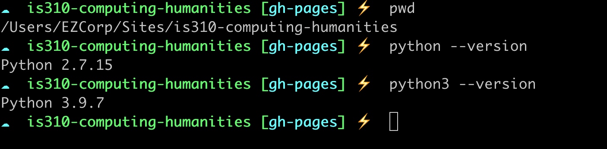
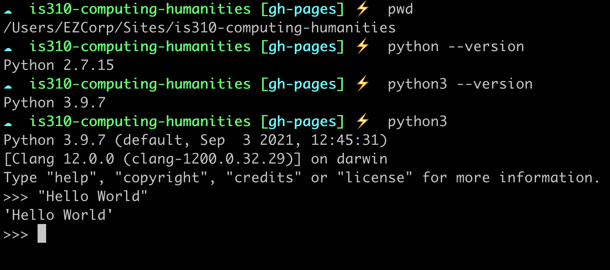
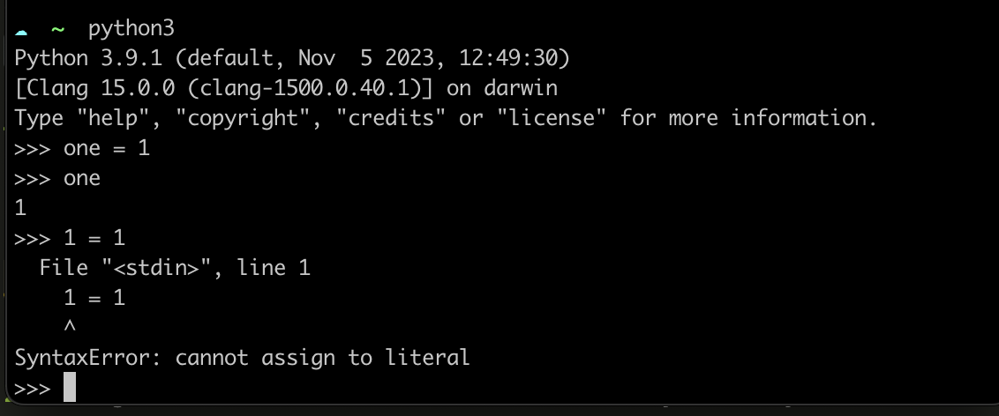

Python Refresher I: Python Foundations
So far in this course, we have either been using the command line or markup languages, but now it’s time to get back into some programming.
⚡️ As a reminder, this course assumes you have either taken a programming course or have some experience with programming. If you don’t have any experience with programming, you should contact the instructor for additional assistance.
Python Foundations
The easiest way to work with Python is through the command line. Let’s start by first checking our Python version. Open your terminal (whether in VS Code or your preferred terminal app) and type python --version or python3 --version. You should see something like the following:

If you don’t see these messages, then you might not have Python installed, so return to our setup instructions and reach out to the instructors for assistance.
In this course, you should be using some version of Python 3. If you’re using Python 2, you should upgrade to Python 3. Python 2 is no longer supported and will not be maintained after 2020. If both commands output a version of Python 3, you can use either python or python3. Historically, python was used to call Python 2 and python3 was used to call Python 3. However, as Python 2 is no longer supported, python should now call Python 3. You can read more at the Python 3 documentation for more information.
Once you have Python working, you can type python3 (or python if it refers to a Python 3 version) and this will open the interactive Python interpreter where you can write your python code and have the computer execute it. This Python interpreter is a type of program that reads and executes Python code (i.e. either Python syntax or files that end with .py). The interactive Python interpreter is an excellent way to sandbox your ideas or check your syntax. You can exit using exit().
Type "Hello world" in the interpreter and press enter. Make sure to use single or double quotes around the this text (otherwise you’ll see a SyntaxError, something we’ll discuss later in this lesson).

Congrats you’ve just typed your first bit of Python and had the computer execute it 🎉!
Let’s breakdown what just happened.
- You entered data into the interpreter.
- That data had a certain format, in this case a string, and the interpreter automatically showed that data again.
We can also use the interpreter as a calculator. Try out these examples.
1+1
2*3You’ll notice that unlike with "Hello World" the interpreter doesn’t just show our data back to us. Instead, it prints out the result of our calculations. This is because the interpreter is designed to show us the results of our calculations. In our first example, we weren’t doing any calculations, so the interpreter just showed us our data. In our second example, we were doing calculations, so the interpreter showed us the results of our calculations.
Now, you can experiment with the interpreter, and you’ll notice that if you use the up arrow, you can access your previous commands. However, the interpreter can do more than just print out data and do calculations. It can also store data.
Variables & Data Types
Rather than retyping our "Hello World", we can save it into something called a variable that let’s us reuse it again and again.
var = "Hello World"Now try typing var again. What happens?
You should see that the var variable now has "Hello World" stored inside. Python understands that we created a variable called var and that our variable contains a string. You can type any string and assign it into a variable.
one = "one"
two = "two"
three = "three"Python knows that these variables contain strings because of the use of either single(’’) or double quotes(““).

The key thing to understand is that in Python we use the = symbol to assign values to variables. The variable is always on the left side of the = equal sign, and the value you want to store in the variable is on the right side of the =.
Strings are just one of many data types accepted in Python.
There’s also numbers, called integers. We can take our variables that we assigned before and assign them their actual numbers.
one = 1
two = 2Once we do this though, you’ll notice that our strings that were stored in these variables will be erased! This is because in Python if you assign a new value to a variable, it will overwrite the old value of the variable.
If you’re curious, this is due to the fact that Python is a dynamically typed language, which means that the data type of a variable can change. This is different from statically typed languages, like Java, where the data type of a variable cannot change. This is a key difference between Python and other programming languages, but don’t worry if this is confusing. You’ll get used to it as you work with Python more and eventually learn other programming languages, as well!
What happens if you try and use a number for your variable rather than typing the word one?
1 = 1
You’ll get a syntax error, like this one above! That’s because Python has rules for how to name variables.
Here are some rules for naming variables in Python:
- A variable name must start with a letter or the underscore character (so you could do both
_oneandone). Your variable name can also start with or contain a capital letter, but by convention, we don’t do this. So you’re better off doingonerather thanOne. - A variable name cannot start with a number (so you can’t do
1one) - A variable name can only contain alpha-numeric characters and underscores (A-z, 0-9, and _ ). So no spaces or special punctuation characters, like
!,@,#,$,%, etc. - A variable also can’t have a space in the name, so you can’t do
one one. Python uses spaces to separate different parts of the code, so if you use a space in a variable name, Python will think you’re trying to separate two different parts of your code. - A variable can’t have a reserved word as a name. The creators and developers of Python have selected a series of words that have a special meaning and function when you are programming in Python. If you try to use these words, then your computer will get confused. For example, if you try to use
andas a variable name, you’ll get a Syntax Error again . You can see a list of reserved words here, as well as in the figure below. Don’t worry about memorizing these, but it’s helpful to know that they exist.

Finally, you should know that variable names are case-sensitive. So, one and One are two different variables.
What makes a good variable name?
As a general rule of thumb, I would recommend choosing names that are relatively short and descriptive. You’ll often see the use of x or y as variable names in Python, but I find these are too short to be helpful. Instead, I would recommend you try to balance describing what’s stored within the variable and keeping it shorter so that you don’t have too much to type. Also to reiterate, in Python we tend to use underscores for naming variables versus Javascript where you use camelCase, so one_one is better than oneOne in Python.
For some more examples, see Melanie Walsh’s note on “Striving for Good Variable Names”.
So our previous example could work if we changed the variable name to:
one_1 = 1Python also has a special name for numbers with decimal points, called floats. We can assign a float to a variable just like we did with integers.
one = 1.0Integers are simple and easy to use. Floats are mostly easy, but sometimes really weird!
Weird Numbers
What does this return?
0.1+0.2If you try this in the Python interpreter, you’ll see that you get 0.30000000000000004. Weird right? This is because of the way that computers store numbers.
All data in a computer is represented as binary (base 2) numbers, comprising only 1s and 0s. The text you’re reading now is represented by individual characters that, under the hood, are stored as binary numbers. The method of translating these information between different forms and contexts (such as between binary numbers and text or numbers) is called encoding.
Integers are easy enough to represent in binary: 0 is 0, 1 is 1, 2 is 10, 3 is 11, 4 is 100, and so on.
But floats are trickier and require a special system to represent. This background is primarily just to provide context, but it is helpful to know that it’s impossible to represent exactly 1/3 in finite decimal notation (0.3333…). It’s similarly impossible to represent some simple decimal numbers in a binary notation. Which is why you get the weird results above.
For more information check out Float to Binary Converter and IEEE 754 Standard.
Here is an overview of the most common data types in Python:
| Data Type | Description | Example |
|---|---|---|
str |
String: a sequence of characters. Indicated with either double or single quotes. | “Hello World” |
int |
Integer: a whole number | 1 |
float |
Float: a number with a decimal point | 1.0 |
bool |
Boolean: a truth value | True |
The bool data type is a special one in Python. It can only have two values: True or False. We can assign these values to a variable just like we did with strings, integers, and floats.
var_true = True
var_false = FalseBoth True and False are reserved words in Python, so you can’t use them as variable names.
Operators
Knowing the data type of a variable is important because it determines what you can do with that variable. For example, you can’t add a string to an integer, but you can add an integer to a float.
one = 1
two = 2.0Here’s a simple example of how you can use the Python interpreter to add these two variables together.
one + twoYou should see 3.0 as your answer. This is because Python automatically converts the integer one into a float so that it can add it to two.
This type of joining is using an operator in Python. Operators are special symbols in Python that carry out arithmetic or logical computation. The value that the operator operates on is called the operand.
For addition, we use the + operator symbol, this is called concatenation.
one + twoFor subtraction, we use the - operator symbol.
one - twoFor multiplication, we use the * operator symbol.
one * twoFor division, we use the / operator symbol.
one / twoNow say we created a variable called three that contained the string "three". What would happen if we added variables one and three together?
one + threeYou should see TypeError: unsupported operand type(s) for +: 'int' and 'str'. This is because Python can’t add an integer to a string. This is because Python can’t add an integer to a string.
If we instead tried joining our var and three variables together, we would get a new string.
var + threeThis new string would be "Hello Worldthree". This might seem like we are overwriting the value of var, but in fact, we are creating a new string. This is because Python strings are immutable which means they cannot be changed after they are created (Java strings also use this immutable style).
While "Hello Worldthree" is not the most useful string, we could check if our two variables contain the same value.
var == threeThis would return False because the two variables contain different values. The == operator is used to compare the values of two variables. It’s important to remember that one = is used to assign a value to a variable, and == is used to compare the values of two variables.
This type of comparison will return a boolean value, either True or False. We can also use the != operator to check if two variables contain different values.
var != threeNow this will return True because the two variables contain different values. True and False are reserved words in Python, so you can’t use them as variable names. You can also represent True as 1 and False as 0.
| Operator | Description | Example |
|---|---|---|
+ |
Addition: adds two operands | a + b |
- |
Subtraction: subtracts two operands | a - b |
* |
Multiplication: multiplies two operands | a * b |
/ |
Division: divides the first operand by the second | a / b |
== |
Equal: compares if the values of two operands are equal | a == b |
!= |
Not equal: compares if the values of two operands are not equal | a != b |
You can find more information about operators here https://www.w3schools.com/python/python_operators.asp.
Quick Exercise
In your Python interpreter, complete the following prompts:
- Create the following variables and assign them the correct information:
- Your favorite film
- Your favorite book
- The release year of your favorite film
- The release year of your favorite book
- Try testing if your favorite film and book are equal.
- Try joining their names together.
- Try finding the difference between the release years of your favorite film and book.
Data Structures
Hopefully you’re starting to see the power of Python. But what if you wanted to store more than one value? You could create a new variable for each value, but that would be a lot of typing.
film = "The Matrix"
film_year = 1999
book = "The Great Gatsby"
book_year = 1925To help with this, Python has a way to store multiple variables in one variable with more complex data types. These are called data structures.
Data structures are a way of organizing and storing data so that it can be accessed and worked with efficiently. They define the relationship between the data, and the operations that can be performed on the data. This is a broad definition, and data structures can be used to store data in a variety of ways.
1. Lists
One of the most common data structures in Python is the list. A list is an ordered, comma-separated collection of any values. We can store any combination of values in our list.
favorite_movies = ["The Matrix", "Star Wars"]Here we have created a new variable called favorite_movies and assigned it a list of strings. We indicate that this is a list through the use of square brackets []. We separate each value in our list with a comma.

As this diagram shows, lists contain a series or sequence of values that are separated by commas. Lists can contain duplicates and different types of data. For example, we could store the release years of our favorite movies in our list.
favorite_movies = ["The Matrix", "Star Wars", 1999, 1977, "The Matrix"]Each list in Python is a sequence, and we can access the position of an item in that sequence through indexing.
The syntax for indexing is to use the name of the list followed by the index of the value you want to access in square brackets. For example, to get the first value in our list, we would type favorite_movies[0].
favorite_movies[0]How could we get the second value in our list? You’ll notice that to get the first movie in our list, we used the index 0. This is because Python is a zero-indexed language, which means that the first value in a list has an index of 0, the second value has an index of 1, and so on. So, just see indexing as a way to count and access the position of an item in a list.
Indexing is very powerful and can be used in many ways. We can use indexing to access the last item in a list, to access a range of items in a list, and to access items in a list that are nested inside of other lists.
favorite_movies[-1]
favorite_movies[1:3]
favorite_movies = ["The Matrix", "Star Wars", 1999, 1977, ["The Matrix II", "Star Wars IV"]]
favorite_movies[4][0]So in the first example here we’re using a negative index to access the last item in our list. Indexing with a negative number starts from the end of the list. We could also do -2 to get the second to last item in our list.
In the second example, we’re using a range of indexes to access the second and third items in our list. This type of range is called slicing. Index slicing is when we write the first index, a colon, and then the second index. The first index is the starting position of the slice, and the second index is the ending position of the slice. The slice will include the first index and exclude the second index. So in our example, we’re getting the second and third items in our list.
Finally, we are expanding our list to contain another list. This is called a nested list. We can use indexing to access the nested list inside of our list. In our example, we’re using the index 4 to access the nested list, and then we’re using the index 0 to access the first item in the nested list.
| List Manipulation Method | Description | Example |
|---|---|---|
favorite_movies[0] |
Indexing: Using the square brackets and a single number to access an item in a list. 0 will access the first item in the list |
“The Matrix” |
favorite_movies[-1] |
Negative Indexing: Using the - symbol to index from the end of the list. -1 accesses the last item in the list |
“The Matrix” |
favorite_movies[1:3] |
Slicing: Using the colon to access a range of items in a list. 1:3 will access the second and third items in the list |
[“Star Wars”, 1999] |
favorite_movies[:2] |
Slicing without start index: Using the colon, but without a start index, to access the first two items in the list. If you leave a beginning index blank, Python will assume you want to start from the beginning of the list | [“The Matrix”, “Star Wars”] |
favorite_movies[-2:] |
Slicing with Negative Indexing: Using the colon and negative indexing to access the last two items in the list. If you leave the ending index blank, Python will assume you want to go to the end of the list | [1977, [“The Matrix II”, “Star Wars IV”]] |
favorite_movies[4][0] |
Nested Indexing: Using indexing to access a nested list inside of a list. 4 accesses the nested list, and 0 accesses the first item in the nested list |
“The Matrix II” |
+ |
Concatenation: Using the + operator to combine two lists |
favorite_movies + least_favorite_movies |
What if we wanted to keep track of our least favorite movies as well? We could create a new list and store it in a variable.
least_favorite_movies = ["The Matrix III", "Star Wars I"]If we wanted to combine our favorite and least favorite movies, we could use a method called concatenation.
favorite_movies + least_favorite_moviesNotice to do concatenation we use the + operator. This would return a new list that contains all of our favorite and least favorite movies. We could than contain this new list in a variable called our movie_collection.
2. Dictionaries
So far we have been using lists to store our data, but what if we wanted to store more information about our movies? We could use a dictionary.

As you can see in this diagram, dictionaries are like lists in that we assign them to variables. But rather than using square brackets [] to indicate that we are creating a list, we use curly brackets {} to indicate that we are creating a dictionary. We also use a colon : to separate the key and value in our dictionary. This is called a key/value pair.
updated_favorite_movies = {
"The Matrix": 1999,
"Star Wars": 1977
}In this example, we have created a new variable called updated_favorite_movies and assigned it a dictionary. The keys of our dictionary are the names of our movies, and the values of our dictionary are the release years of our movies. We can access the values in our dictionary using the keys of our dictionary.
updated_favorite_movies["The Matrix"]This would return 1999.
Here we are using square brackets to access the value of the key "The Matrix". This looks similar to indexing in lists, but instead of using a number to access the position of an item in a list, we are using the key to access the value of a key/value pair in a dictionary. If you don’t use the key of a dictionary, you’ll get a KeyError.
updated_favorite_movies["The Matrix II"]This would return KeyError: 'The Matrix II'. This tells us that the key "The Matrix II" doesn’t exist in our dictionary.
Now what if we didn’t want to have to remember the name of our movie to access it? Rather than using movie names as our keys, we could instead use a generic key, like movie, etc.
updated_favorite_movies = {
"movie": "The Matrix",
}But what if we wanted to added a second movie?
updated_favorite_movies = {
"movie": "The Matrix",
"movie": "Star Wars"
}Now if we tried to access the value of the key "movie", we would only get Star Wars. This is because our new value overwrote our old value. In a dictionary, keys must be unique!
This is a key difference between lists and dictionaries. In a list, you can have duplicate values, but in a dictionary, you can’t have duplicate keys.
So to add a second movie to our dictionary, we would need to use a different key.
updated_favorite_movies = {
"movie_1": "The Matrix",
"movie_2": "Star Wars"
}Now we can access the value of the key "movie_1" and "movie_2".
updated_favorite_movies["movie_1"]
updated_favorite_movies["movie_2"]This would return "The Matrix" and "Star Wars" respectively.
We could also start storing the release years of our movies in the dictionary through creating a nested dictionary.
updated_favorite_movies = {
"movie_1": {
"name": "The Matrix",
"release_year": 1999
},
"movie_2": {
"name": "Star Wars",
"release_year": 1977
}
}Now each of our movies is a dictionary that contains the name and release year of our movie. We can access the value for each movies using either movie_1 or movie_2.
updated_favorite_movies["movie_1"]This would return {'name': 'The Matrix', 'release_year': 1999}. We could also access just the name of the movie using the key name.
updated_favorite_movies["movie_1"]["name"]What’s happening here is that we’re using the keys to find our value that’s nested inside a dictionary within a dictionary.
We can use a similar method for updating our dictionary. We can add new key/value pairs to our dictionary, update the value of a key, and remove a key/value pair from our dictionary.
updated_favorite_movies["movie_1"]["name"] = "The Matrix II"
updated_favorite_movies["movie_1"]["release_year"] = 2003Now our dictionary would look like this:
updated_favorite_movies = {
"movie_1": {
"name": "The Matrix II",
"release_year": 2003
},
"movie_2": {
"name": "Star Wars",
"release_year": 1977
}
}We can also add new key/value pairs to our dictionary.
updated_favorite_movies["movie_3"] = {
"name": "The Matrix III",
"release_year": 2003
}Notice that in each of these examples we are using the square brackets to access the value of a key in our dictionary, and then the equal sign to assign a new value to that key.
You can also get even more complex and store lists in dictionaries:
updated_favorite_movies = {
"movie_1": {
"name": "The Matrix I",
"release_year": 1999,
"sequels": ["The Matrix II", "The Matrix III", "The Matrix IV"]
},
"movie_2": {
"name": "Star Wars IV",
"release_year": 1977,
"sequels": ["Star Wars V", "Star Wars VI", "Star Wars VII", "Star Wars VIII", "Star Wars IX"],
"prequels": ["Star Wars I", "Star Wars II", "Star Wars III"]
}
}Notice that the list is stored as a value in our dictionary. We can access the value of the key "sequels" in our dictionary using the key "movie_1".
updated_favorite_movies["movie_1"]["sequels"]This combining of lists and dictionaries, also means that can put dictionaries inside of lists:
updated_favorite_movies =[
{
"name": "The Matrix I",
"release_year": 1999,
"sequels": ["The Matrix II", "The Matrix III", "The Matrix IV"]
},
{
"name": "Star Wars IV",
"release_year": 1977,
"sequels": ["Star Wars V", "Star Wars VI", "Star Wars VII", "Star Wars VIII", "Star Wars IX"],
"prequels": ["Star Wars I", "Star Wars II", "Star Wars III"]
}
]Notice that we now don’t have keys for our top-most dictionaries. In lists, items don’t have keys, so each of your dictionaries is without an explicit key.
Python defaults to indexing each dictionary with numbers, just like in our list of strings. So to get the first value, you would type:
updated_favorite_movies[0]| Dictionary Manipulation Method | Description | Example |
|---|---|---|
updated_favorite_movies["movie_1"] |
Indexing: Using the square brackets and a key to access a value in a dictionary. "movie_1" will access the value of the key "movie_1" |
{‘name’: ‘The Matrix’, ‘release_year’: 1999} |
updated_favorite_movies["movie_1"]["name"] |
Nested Indexing: Using indexing to access a nested dictionary inside of a dictionary. "movie_1" accesses the nested dictionary, and "name" accesses the value of the key "name" |
“The Matrix” |
updated_favorite_movies["movie_1"]["name"] = "The Matrix II" |
Updating a Value: Using the square brackets and a key to access a value in a dictionary, and then the equal sign to assign a new value to that key | “The Matrix II” |
updated_favorite_movies["movie_3"] = {"name": "The Matrix III", "release_year": 2003} |
Adding a Key/Value Pair: Using the square brackets and a key to add a new key/value pair to a dictionary | “The Matrix III” |
updated_favorite_movies["movie_1"]["sequels"] |
Accessing a List: Using indexing to access a list inside of a dictionary. "movie_1" accesses the nested dictionary, and "sequels" accesses the value of the key "sequels" |
[“The Matrix II”, “The Matrix III”, “The Matrix IV”] |
Quick Exercise
In your Python interpreter, complete the following prompts:
- Create a dictionary that contains the following information about your favorite book: title, author, and release year.
- Create a dictionary that contains the following information about your favorite film: title, director, and release year.
- Create a list that contains both of these dictionaries.
- Access the release year of your favorite book.
- Access the director of your favorite film.